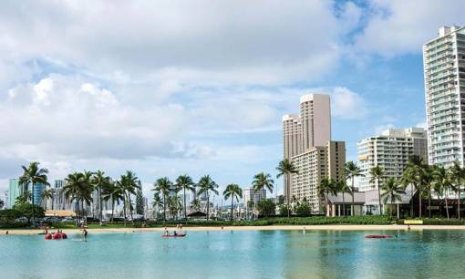

- Главная /
- Туразметки /
- Гонолулу – спокойный тропический мегаполис
Гонолулу – спокойный тропический мегаполис
Сегодня Гонолулу – современный и один из самых безопасных городов Америки! Он характерен многими уникальными чертами. Например, после серфинга на всемирно известном пляже Вайкики, вы можете прокатиться по историческому центру. Покупки в именитых магазинах, прогулки по невероятным прибрежным скалам и блюда лучших пятизвездочных ресторанов – в Гонолулу. И все это Вы можете сделать за один день.
Пляж Вайкики, расположенный на южном берегу Гонолулу, когда-то был игровой площадкой для гавайской королевской семьи. Известный на гавайском языке как «извергающиеся воды», Вайкики был представлен миру в 1901 году. Тогда на его берегу был построен первый отель «Moana Surfrider».
Пляж Вайкики, расположенный на южном берегу Гонолулу, когда-то был игровой площадкой для гавайской королевской семьи. Известный на гавайском языке как «извергающиеся воды», Вайкики был представлен миру в 1901 году. Тогда на его берегу был построен первый отель «Moana Surfrider».

Обзорные маршруты по Сан-Франциско
Рядом с небоскребами главного делового района острова Вы найдете важные достопримечательности, такие как дворец Иолани, статуя короля Камехамеха I, церковь Кавайахао и башня Алоха. Эти важные культурные достопримечательности и архитектурные чудеса можно увидеть во время неторопливой пешеходной экскурсии.
От тако с рыбой в Duke's Beach House до эклектичных гастрономических блюд в модном китайском квартале. В Гонолулу есть все на любой вкус! Попробуйте изысканную гавайскую кухню в местных заведениях, таких как ресторан Alan Wong's, Roy's Waikiki или Chef Mavro. Исследуйте жилые кварталы Гонолулу и ешьте как местный житель, с порционными ланчами, тыквой и свежими продуктами с многочисленных фермерских рынков города.
Гонолулу – это рай для шопинга. Здесь вы найдете не только гавайские изделия ручной работы на память о своем путешествии. Также тут представлены дорогие модные бренды. Бесплатные троллейбусы курсируют между Вайкики и Ала Моана, где есть более 290 магазинов и 80 ресторанов.
Чтобы оказаться на спокойном острове, оторванном от всего мира, и насладиться волнами Тихого океана, рекомендуем поехать в Гонолулу.
От тако с рыбой в Duke's Beach House до эклектичных гастрономических блюд в модном китайском квартале. В Гонолулу есть все на любой вкус! Попробуйте изысканную гавайскую кухню в местных заведениях, таких как ресторан Alan Wong's, Roy's Waikiki или Chef Mavro. Исследуйте жилые кварталы Гонолулу и ешьте как местный житель, с порционными ланчами, тыквой и свежими продуктами с многочисленных фермерских рынков города.
Гонолулу – это рай для шопинга. Здесь вы найдете не только гавайские изделия ручной работы на память о своем путешествии. Также тут представлены дорогие модные бренды. Бесплатные троллейбусы курсируют между Вайкики и Ала Моана, где есть более 290 магазинов и 80 ресторанов.
Чтобы оказаться на спокойном острове, оторванном от всего мира, и насладиться волнами Тихого океана, рекомендуем поехать в Гонолулу.